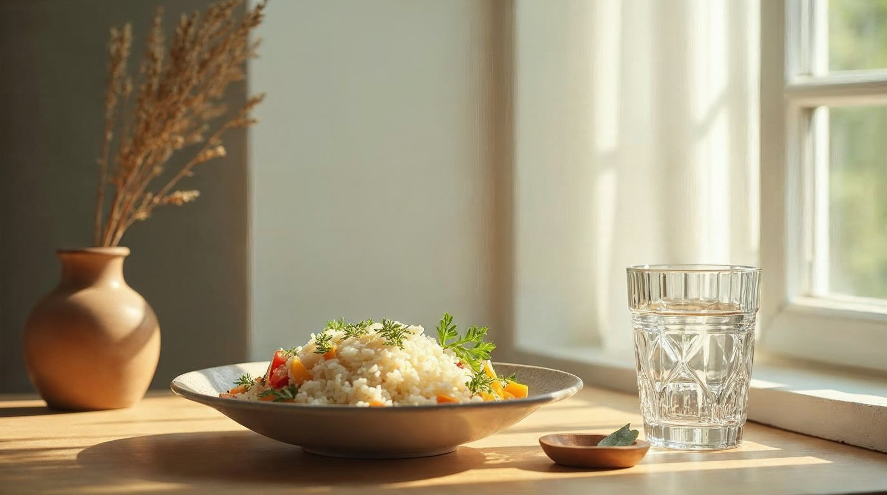
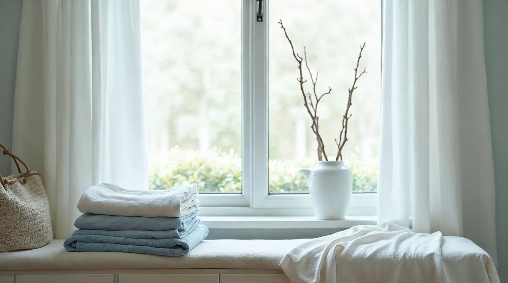
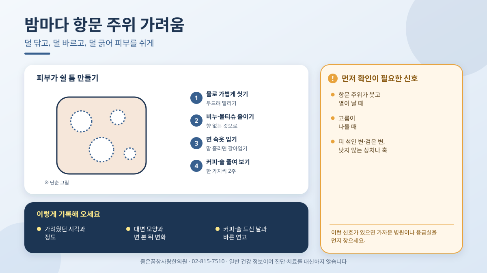

이종호 한의사 감수좋은꿈참사랑한의원 대표원장 (한의사 면허번호 19769)발행 2026-11-26 · 수정 2026-11-26
이 글의 차례
잠자리에 누워 겨우 잠이 들려는데 엉덩이 사이가 근질거리기 시작합니다. 참아 보려 해도 점점 더 간지러워 결국 손이 가고, 긁고 나면 시원한 것도 잠시, 이내 화끈거리고 더 가렵습니다. 아침에 보면 속옷에 얼룩이 묻어 있기도 합니다.
항문 가려움은 누구에게 쉽게 말하기 어려운 불편입니다. 그래서 오래 혼자 참거나, 약국에서 연고를 사서 바르며 버티다가 다른 이야기로 진료실에 오셨다가 조심스럽게 꺼내시는 분이 많습니다. 생각보다 흔한 불편이니 편하게 말씀하셔도 괜찮습니다. 진료실에서는 꼭 필요한 것만 조심스럽게 여쭙습니다.
항문 주위 피부는 얇고 늘 습기에 닿아 있으며, 대변이 지나가는 자리라 작은 자극에도 쉽게 예민해집니다. 그래서 가려움의 원인도 한 가지보다 여러 가지가 겹친 경우가 많습니다.
이 글에서는 항문 가려움이 생기는 흔한 이유를 하나씩 나눠 보고, 생활에서 바꿔 볼 수 있는 습관, 병원에서 확인이 필요한 경우, 한의원에서 함께 살필 수 있는 부분을 차분히 정리해 보겠습니다.
왜 항문 주위가 가려울까요
항문 가려움은 대개 '피부가 지쳐 있다'는 신호입니다. 습기, 대변의 찌꺼기, 지나친 닦기, 자극적인 음식이 번갈아 피부를 건드리면 피부의 보호막이 얇아지고, 얇아진 피부는 작은 자극에도 가려움을 크게 느낍니다.
가려워서 긁으면 피부가 더 상하고, 상한 피부는 더 가려워집니다. 이 고리가 생기면 처음 원인이 사라진 뒤에도 가려움만 오래 남기도 합니다. 그래서 원인을 찾는 것과 함께 긁는 고리를 끊는 것이 중요합니다.
밤에 유독 심해지는 것은 낮에는 다른 일에 마음이 가 있다가 누우면 감각이 또렷해지고, 이불 속에서 몸이 따뜻해지며 습기가 차기 때문입니다. 잠결에 모르고 긁는 경우도 많아 아침에 더 쓰라리다는 분이 많습니다.
너무 깨끗이 닦는 것도 원인이 됩니다
뜻밖에도 항문 가려움이 있는 분 가운데 '너무 깨끗이' 닦는 습관을 가진 분이 많습니다. 가려우니 더 청결하게 하려고 마른 휴지로 여러 번 세게 닦고, 비누로 문질러 씻고, 물티슈로 다시 닦습니다.
이렇게 하면 얇은 피부가 쓸려 상처가 나고, 비누와 물티슈의 향료나 보존제가 피부를 자극합니다. 결국 깨끗이 하려는 노력이 오히려 가려움을 키우는 셈이 됩니다.
뒤처리는 미지근한 물로 가볍게 씻어 내고, 부드러운 수건으로 두드리듯 물기를 말리는 정도면 충분합니다. 비누는 쓰지 않거나, 쓰더라도 순한 것을 조금만 쓰고 잘 헹궈 주세요. 비데를 쓰신다면 물살을 약하게, 짧게 쓰시길 권합니다.
습기와 잔변, 대변의 모양
항문 주위에 습기가 오래 머물면 피부가 불어 약해집니다. 땀이 많은 체질, 통이 좁고 땀이 잘 안 빠지는 속옷과 바지, 오래 앉아 있는 생활이 습기를 가두기 쉽습니다.
변이 묽거나 자주 보는 분, 변을 본 뒤에도 조금씩 묻어나는 느낌이 있는 분은 대변 찌꺼기가 피부에 남아 가려움을 만들기 쉽습니다. 반대로 변비로 힘을 많이 주는 분은 치질이 함께 생겨 점액이 새어 나오며 가려울 수 있습니다.
그래서 진료실에서는 가려움 이야기와 함께 대변 이야기를 꼭 여쭙니다. 변의 모양과 횟수가 정돈되면 가려움도 함께 줄어드는 경우가 많기 때문입니다.

음식과 음료도 영향을 줍니다
커피, 홍차, 콜라처럼 카페인이 든 음료, 매운 음식, 술, 초콜릿, 토마토, 감귤류가 항문 가려움을 키운다는 분이 많습니다. 이런 음식은 대변을 통해 항문 주위 피부를 자극하거나, 항문 조임을 느슨하게 해 습기를 늘린다고 설명합니다.
모든 사람에게 다 해당되는 것은 아니어서, 한꺼번에 다 끊기보다 의심되는 것을 한 가지씩 2주쯤 줄여 보며 차이를 적어 보시길 권합니다. 커피를 하루 세 잔에서 한 잔으로 줄였더니 밤 가려움이 덜해졌다는 이야기를 자주 듣습니다.
저녁 늦게 마시는 술과 야식은 밤사이 대변을 묽게 하고 몸에 열을 올려 가려움을 키우기 쉽습니다. 가려움이 심한 시기에는 저녁을 일찍 가볍게 마치고, 잠들기 전 따뜻한 보리차 한 잔으로 하루를 정리해 보세요.
확인이 필요한 다른 원인들
생활을 바꿔도 가려움이 이어진다면 다른 원인이 있는지 확인해 볼 필요가 있습니다.
- 치질이나 치열: 점액이나 피가 묻어 나오며 가렵기도 합니다
- 곰팡이(칸디다) 감염: 붉고 축축하며 가장자리가 또렷하게 번지기도 하고, 당뇨가 있거나 항생제를 드신 뒤에 잘 생깁니다
- 피부 질환: 습진, 건선, 접촉 피부염처럼 다른 부위의 피부 질환이 항문 주위에도 나타날 수 있습니다
- 요충: 아이가 밤에 항문을 긁으며 잠을 설친다면 소아청소년과에서 확인해 보세요
- 연고: 스테로이드 연고를 오래 바르면 피부가 얇아져 오히려 가려움이 이어지기도 합니다
이런 경우는 원인에 맞는 치료가 필요해서 항문외과나 피부과, 소아청소년과 진료를 함께 받아 보시는 것이 좋습니다. 가려움이 오래되었는데 한 번도 진찰을 받지 않으셨다면 한 번은 확인을 받아 보시길 권합니다.
연고는 어떻게 생각하면 될까요
약국에서 사서 바르는 가려움 연고 가운데에는 스테로이드가 들어 있는 것이 많습니다. 짧게 쓰면 가려움을 가라앉히는 데 도움이 되지만, 몇 주씩 이어 바르면 피부가 얇아지고 오히려 가려움이 길어지기도 합니다.
연고를 바르기 시작한 지 오래되었다면, 어떤 연고를 얼마나 쓰셨는지 가져와 주세요. 피부과나 항문외과에서 처방받은 연고라면 안내받은 기간과 방법대로 쓰시는 것이 좋습니다.
여러 가지 연고와 파우더를 번갈아 바르는 분도 계신데, 성분이 겹치거나 오히려 피부를 자극할 수 있습니다. 가려움이 심할수록 바르는 것을 늘리기보다 단순하게 줄이는 쪽이 피부를 쉬게 하는 데 도움이 되는 경우가 많습니다.
긁는 고리를 끊는 방법
항문 가려움에서 가장 어려운 것이 긁지 않는 일입니다. 특히 잠결에 긁는 것은 의지로 막기 어렵습니다. 그래서 의지보다 환경을 바꾸는 쪽을 권합니다.
손톱을 짧고 둥글게 다듬어 두면 잠결에 긁어도 피부가 덜 상합니다. 잠들기 전 가볍게 씻고 물기를 잘 말린 뒤, 통이 넉넉한 면 잠옷을 입으세요. 이불을 너무 두껍게 덮어 땀이 차지 않도록 방 온도를 조금 서늘하게 맞추는 것도 도움이 됩니다.
낮에 가려움이 올라올 때는 긁기 전에 잠시 자리에서 일어나 걷거나, 차가운 물수건을 대 보세요. 가려움은 몇 분 사이에 파도처럼 올라왔다 내려가는 경우가 많아서, 그 몇 분을 넘기는 방법을 하나 정해 두면 긁는 횟수가 줄어듭니다.

계절과 생활에 따라 달라지는 가려움
여름에는 땀과 습기 때문에, 겨울에는 난방으로 피부가 건조해지고 두꺼운 옷 속에 열이 갇혀서 가려움이 심해지는 분이 많습니다. 계절이 바뀔 때마다 속옷과 잠자리 온도를 함께 바꿔 주시면 좋습니다.
운전이나 사무 일로 하루 종일 앉아 계신 분, 운동 뒤 땀에 젖은 옷을 오래 입고 계신 분도 가려움이 잦습니다. 땀을 흘린 날은 미루지 말고 씻고 갈아입는 습관을 들여 보세요.
잠이 부족하고 긴장이 큰 시기에는 같은 자극에도 가려움을 더 크게 느낍니다. 몸이 지쳐 있으면 피부의 회복도 더디기 때문입니다. 가려움 이야기를 하실 때 요즘의 잠과 일의 무게를 함께 여쭙는 것도 이 때문입니다.
먼저 이렇게 여쭙니다
말씀하기 쑥스러운 이야기지만, 저는 대략 이런 순서로 편하게 여쭙니다.
- 가려움은 언제부터, 하루 중 언제 가장 심한가요?
- 화장실을 다녀온 뒤나 땀을 흘린 뒤에 더 심해지나요?
- 뒤처리는 어떻게 하시나요? 비누, 물티슈, 비데를 쓰시나요?
- 대변은 하루 몇 번, 어떤 모양인가요? 피나 점액이 묻어 나오나요?
- 쓰고 계신 연고나 파우더가 있나요? 얼마나 쓰셨나요?
- 커피, 술, 매운 음식은 얼마나 드시나요? 당뇨가 있다는 이야기를 들으셨나요?
모두 정확히 기억하지 못하셔도 괜찮습니다. 쓰고 계신 연고와 물티슈를 챙겨 오시면 함께 볼 수 있습니다.
일상에서 먼저 해 볼 수 있는 것
- 뒤처리는 미지근한 물로 가볍게 씻고 부드럽게 두드려 말리기
- 비누와 향이 있는 물티슈는 쓰지 않거나 줄이기
- 통이 넉넉한 면 속옷을 입고, 땀을 흘린 날은 갈아입기
- 커피, 술, 매운 음식은 한 가지씩 줄여 보며 차이 적어 보기
- 오래 앉아 있다면 한 시간에 한 번 일어나 몇 분 걷기
- 밤에 긁는다면 손톱을 짧게 깎고, 잠들기 전 가볍게 씻고 잘 말리기
가려울 때 긁는 대신 차가운 물수건을 잠시 대 두는 것도 도움이 될 수 있습니다. 거즈나 얇은 면 한 장을 엉덩이 사이에 대 두면 습기를 머금어 주어 낮 동안 편하다는 분도 계십니다.
대변이 묽거나 잦은 분이라면 대변의 모양을 정돈하는 것도 함께 챙기세요. 섬유질과 물을 고르게 드시고, 변을 본 뒤에는 남은 느낌이 없도록 물로 부드럽게 씻어 내는 습관이 도움이 됩니다.
한의원에서 함께 살필 수 있는 경우
- 병원에서 큰 이상은 없다고 들었는데 밤마다 항문 주위 가려움이 이어지는 경우
- 대변이 묽거나 잦아 가려움이 함께 반복되는 경우
- 몸에 열이 많고 땀이 많으며 술이나 매운 음식 뒤에 가려움이 심해지는 경우
- 가려움 때문에 잠을 설치고 긴장과 예민함이 커진 경우
좋은꿈참사랑한의원에 오시면 먼저 아래 '먼저 확인이 필요한' 신호가 없는지부터 봅니다. 그다음 맥을 짚고 대변과 식사, 잠, 땀, 다른 부위의 피부를 여쭈며, 배를 눌러 보며 장의 흐름을 확인합니다.
진찰한 내용을 바탕으로 생활에서 바꿔 볼 것 하나와 함께 침, 한약 상담 가운데 지금 상태에 맞는 것을 정합니다.
한의원에서는 주로 대변의 흐름, 몸의 열과 습기, 잠과 긴장을 함께 살피고, 피부 자체의 진찰이 필요하면 피부과나 항문외과와 나란히 갑니다. 한약을 상의할 때는 드시는 약을 모두 확인하고 신중하게 정하며, 처방받은 약은 상의 없이 멈추지 않습니다.
임신 중이시거나 수유 중이시라면 처음에 먼저 알려 주세요. 침과 한약 모두 그에 맞춰 조심스럽게 정하고, 필요하면 산부인과 선생님과 상의하시도록 안내합니다.
이렇게 기록해 오시면 상담이 쉬워집니다
가려움은 날마다 정도가 달라서, 짧게라도 적어 두시면 흐름이 잘 보입니다. 2주 정도 적어 보세요.
- 가려움이 심했던 시각과 정도(10점 만점)
- 대변 횟수와 모양, 변을 본 뒤 가려움이 달라졌는지
- 커피, 술, 매운 음식을 드신 날
- 땀을 많이 흘린 날, 오래 앉아 있었던 날
- 바른 연고와 뒤처리 방법을 바꾼 날
빠진 날이 있어도 괜찮습니다. 적어 오신 줄 가운데 유독 가려웠던 날부터 함께 들여다보겠습니다. 가려움이 심했던 날 앞뒤로 무엇이 겹쳤는지 보다 보면, 내 피부를 건드리는 것이 무엇인지 조금씩 드러납니다.
피부가 쉴 틈을 만들어 주며
항문 가려움은 피부를 더 세게 돌보기보다, 오히려 덜 건드리고 쉬게 해 줄 때 편해지는 경우가 많습니다. 덜 닦고, 덜 바르고, 덜 긁는 것이 생각보다 큰 힘이 됩니다.
가려움이 줄어드는 데에는 피부가 새로 차오르는 시간이 필요해서, 습관을 바꾸고 나서도 몇 주는 지켜봐 주셔야 합니다. 하루 이틀 만에 달라지지 않는다고 다시 세게 닦거나 연고를 늘리지 마시고, 정한 습관을 차분히 이어 가 주세요.
밤에 푹 잔 날이 하나둘 늘어나는 것만으로도 큰 변화입니다. 잠이 편해지면 피부의 회복도 빨라지고, 다시 긁는 일도 줄어드는 좋은 고리가 생깁니다.
이번 주에는 물로만 씻고 두드려 말리기, 커피 한 잔 줄이기, 면 속옷으로 바꾸기 가운데 하나만 골라 보세요. 다음에 오시면 그 일주일 동안 밤이 어땠는지부터 여쭙겠습니다.
이런 증상은 먼저 확인이 필요합니다
- 항문 주위가 붓고 단단해지며 열이 나거나 고름이 나오는 경우
- 피가 섞인 변이나 검은 변을 보거나, 항문 주위에 잘 낫지 않는 상처나 혹이 만져지는 경우
이런 신호가 있으면 한의원보다 가까운 병원이나 응급실을 먼저 찾으세요.
함께 읽으면 좋은 글
- 치질 때문에 항문이 붓고 피가 묻어날 때 무엇을 구분하고 어떻게 살피나요?
- 가려움이 낮에 심한지 밤에 심한지는 왜 묻고, 어떻게 적어 두나요?
- 나이가 들면서 피부가 건조해지고 온몸이 가려운 노년기 피부소양증은 어떻게 살피나요?
- 변을 보고 나도 개운하지 않은 잔변감, 하루에 여러 번 화장실에 갈 때는 어떻게 살피나요?
- 배가 자주 아프고 설사·변비가 반복되는 과민성 장 증후군은 어떻게 살피나요?

여쭙는 것
- 가려움은 언제부터, 하루 중 언제 가장 심한가요?
- 화장실을 다녀온 뒤나 땀을 흘린 뒤에 더 심해지나요?
- 뒤처리는 어떻게 하시나요? 비누, 물티슈, 비데를 쓰시나요?
생활에서 해 볼 것
- 뒤처리는 미지근한 물로 가볍게 씻고 부드럽게 두드려 말리기
- 비누와 향이 있는 물티슈는 쓰지 않거나 줄이기
- 통이 넉넉한 면 속옷을 입고, 땀을 흘린 날은 갈아입기
한의원에서 함께 살필 것
- 병원에서 큰 이상은 없다고 들었는데 밤마다 항문 주위 가려움이 이어지는 경우
- 대변이 묽거나 잦아 가려움이 함께 반복되는 경우
- 몸에 열이 많고 땀이 많으며 술이나 매운 음식 뒤에 가려움이 심해지는 경우
먼저 확인이 필요한 신호
- 항문 주위가 붓고 단단해지며 열이 나거나 고름이 나오는 경우
- 피가 섞인 변이나 검은 변을 보거나, 항문 주위에 잘 낫지 않는 상처나 혹이 만져지…
한눈에 보는 표
| 구분 | 핵심 |
|---|---|
| 여쭙는 것 | 가려움은 언제부터, 하루 중 언제 가장 심한가요? 화장실을 다녀온 뒤나 땀을 흘린 뒤에 더 심해지나요? |
| 생활에서 해 볼 것 | 뒤처리는 미지근한 물로 가볍게 씻고 부드럽게 두드려 말리기 비누와 향이 있는 물티슈는 쓰지 않거나 줄이기 |
| 한의원에서 함께 살필 것 | 병원에서 큰 이상은 없다고 들었는데 밤마다 항문 주위 가려움이 이어지는 경우 대변이 묽거나 잦아 가려움이 함께 반복되는 경우 |
| 먼저 확인이 필요한 신호 | 항문 주위가 붓고 단단해지며 열이 나거나 고름이 나오는 경우 피가 섞인 변이나 검은 변을 보거나, 항문 주위에 잘 낫지 않는 상처나 혹이 만져지는 경우 |
자주 묻는 질문
항문이 가려우면 더 깨끗이 씻어야 하나요?
너무 자주, 세게 닦거나 비누로 문지르면 오히려 피부가 상해 더 가려울 수 있습니다. 미지근한 물로 가볍게 씻고 부드럽게 두드려 말리는 정도면 충분합니다.
약국 연고를 계속 발라도 될까요?
스테로이드가 든 연고는 짧게 쓰면 도움이 되지만 오래 바르면 피부가 얇아질 수 있습니다. 몇 주째 바르고 계시다면 피부과나 항문외과에서 확인을 받아 보시길 권합니다.
아이가 밤에 항문을 긁는데 괜찮을까요?
아이가 밤에 항문을 긁으며 잠을 설친다면 요충 같은 원인이 있을 수 있어 소아청소년과에서 확인해 보시는 것이 좋습니다.
커피를 줄이면 정말 덜 가려울까요?
사람마다 다르지만 커피나 술, 매운 음식을 줄였을 때 밤 가려움이 덜하다는 분이 많습니다. 한 가지씩 2주쯤 줄여 보며 차이를 적어 보세요.
좋은꿈참사랑한의원은 재진 때 지난번 이야기부터 이어서 여쭙니다. 진료시간과 예약은 오시는 길에서 확인하세요.
어디서 상담받을 수 있나요?
좋은꿈참사랑한의원은 서울 동작구 만양로2길 2 신성빌딩 3층·5층(서울 동작구 상도동, 7호선 상도역 3번 출구 근처)에 있습니다. 한의사 3명(이종호 대표원장, 조영기 수석진료원장, 정원영 진료원장)이 진료합니다. 진료시간은 평일 09:30~20:00(점심 13:00~14:00), 토·일·공휴일 09:30~15:00이며, 방문 전 전화로 확인을 권합니다. 예약은 네이버 예약, 카카오톡 상담, 전화 02-815-7510로 받습니다.
이 글은 일반적인 건강 정보이며 개인의 진단이나 치료를 대신하지 않습니다. 증상이 있거나 복용 중인 약이 있다면 진료를 통해 확인하세요. 치료 효과는 개인마다 다를 수 있습니다.
작성 기준: 일반적으로 알려져 있는 건강 정보를 참고해 정리했습니다(대표원장 감수). 증상 기록은 1~2주 동안 하루 1회, 비슷한 시간에 적어 오시면 지난 상태와 비교하기 쉽습니다.